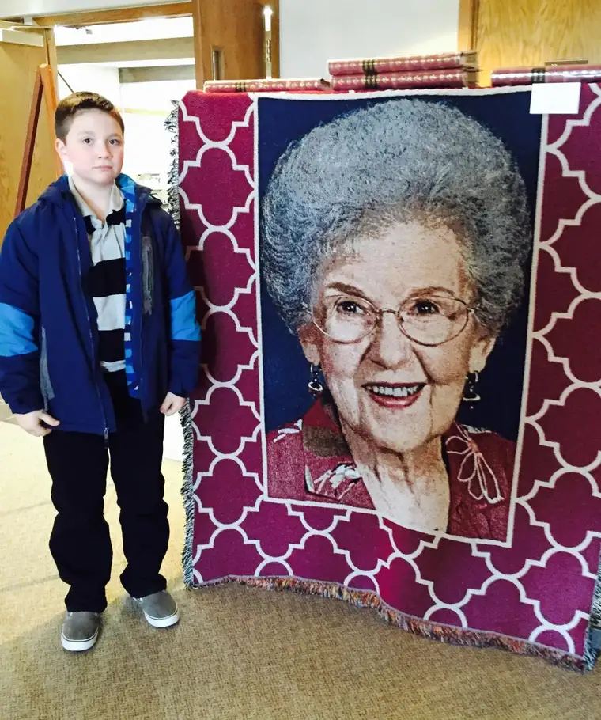
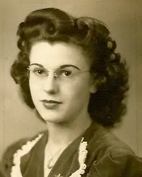
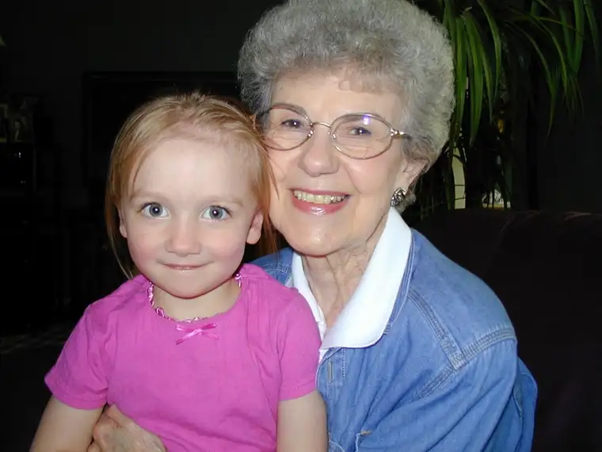
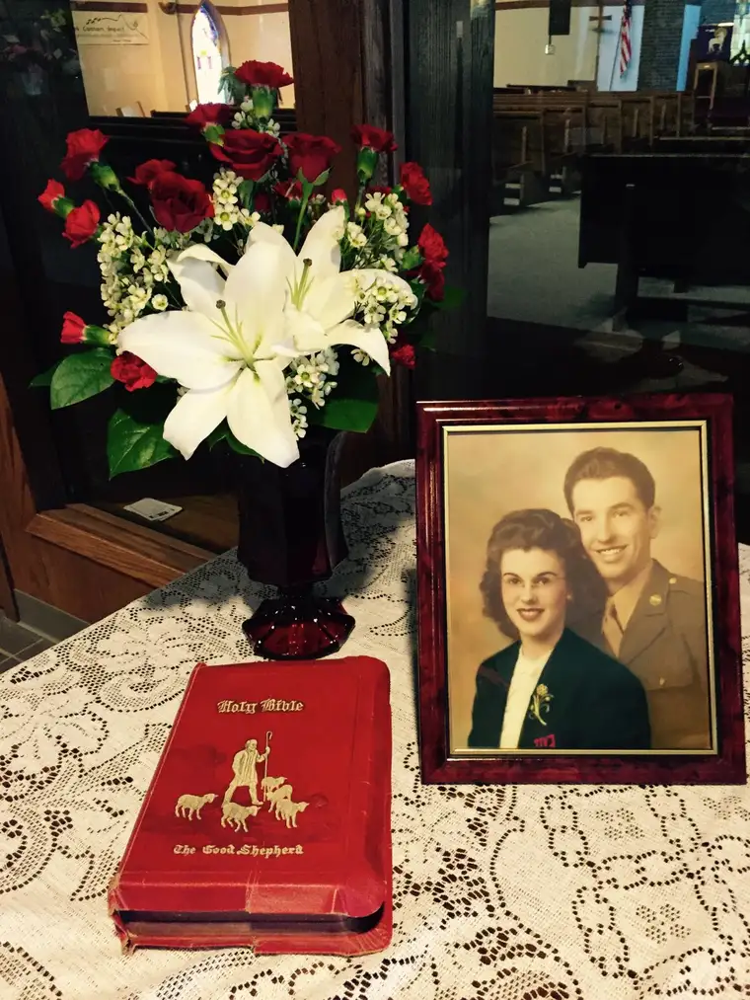
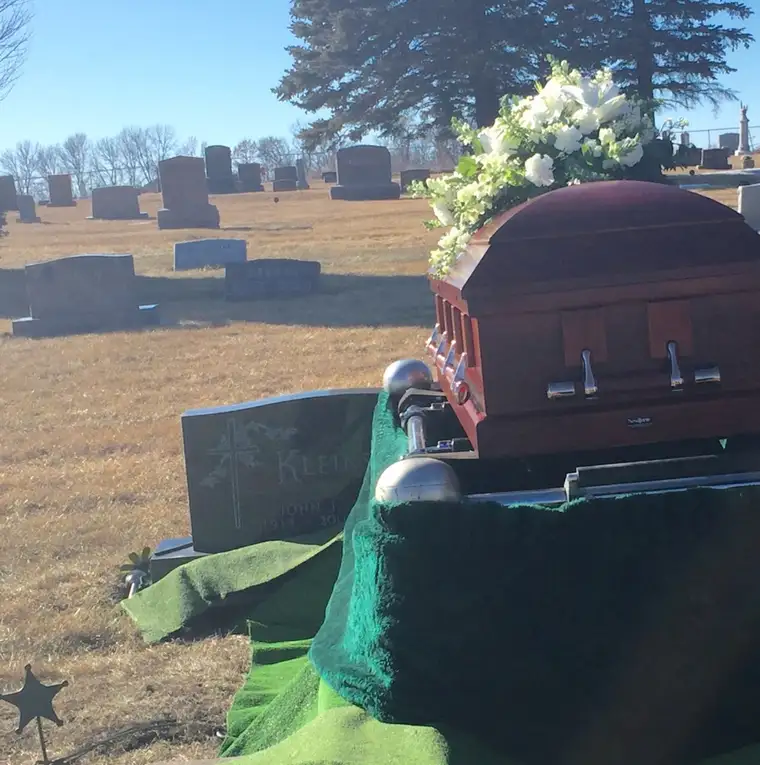

This has been a month heavy with funerals. The one bit of solace I can share is that in all cases – at least those that were very close and personal to us — the deaths had been a friend. Yes, you read that right. The deaths themselves had come as friends, and not enemies.
At Troy’s grandmother’s funeral on March 1, her dear younger brother, the Reverend Sam Hofer, offered some parting words of solace. Though he is a pastor, I’ve always heard him referred to as “Uncle Sam.” He is a delight of a man with so much wisdom about him. He spoke of his sister’s death as one having belonged to the category of a friendly death, not one that had arrived as an enemy.

Quilt donated by the grandkids of Gladys’ image woven in, and Nick standing near it to show proportions.But how can we view death as a friend? He mentioned three qualities. In order for death to be a friend, it must, first of all, be connected to a person who who has had adequate time — who has lived a long life as Gladys did (she was 93). The life has had time to be what it was meant to be. As well, the life had to have been a good life. The person lived, as well as possible, a life filled with goodness, with plenty of efforts to love. We might say that the world expanded and became a better place because of them. And finally, the life that ends in a friendly death is one that was useful. I would say that it was one that found purpose. The person did not squander his or her time, but set about seeking the Lord’s will, and coming as close as humanly possible to accomplishing that. Gladys’ life met all three, and so her death came as a friendly one.

A young Gladys Hofer.Aside from pondering this, I learned some new things about Gladys at her funeral. I learned about her father’s early death at age 27, and the tragedy of it (death, for him, was not a friendly one; it had come too soon and he had left young children and a wife). That is a sadness. But this became something important to Gladys. Because, as her mother lay dying not too many years later, she pulled her children, about to become orphans, near and said, “I am going to see God soon, and I want you to live your lives so that you will be there with me someday.”
Gladys and Sam also had lost two twin sisters in infancy, and so for them, death was a reality, and eternal life, also a reality. They wanted to see their mama again someday, and so they set about their lives with keen vision fixed on this possibility.
Uncle Sam did so as a devoted family man and preacher, and Gladys, as the soul of her home. Her homemade, fresh-from-the-garden meals were unparalleled perfection. Her apple pie? Truly incredible. Her home-canned pickles? Well, I will miss them nearly as much as her, I have to admit!

Grandma Gladys and our Olivia and Livvy was around 5.I did not know that she came from a musical family until the day of her funeral — that her father had been a church musician — but I did know that she had a musical soul. In the past, I had the pleasure of sitting at a piano with Gladys and, with her playing, singing three-part harmony with her and her oldest daughter, Bev, my mother-in-law. These are memories I will always cherish. Gladys was dear to me — spunky, funny and so sweet. She loved our family, and we loved her. Though she missed her beloved, John, after losing him, she braved the life of a widow these last years.

But, it was time for her to be united with her loves again — with Grandpa John and with Jesus and all those she has missed so much. I am happy for her for that alone. What a prize!

It is entirely fitting, because of this musical connection, that after years of hoping someday my daughters and I would have a chance to sing together, this opportunity finally happened at Grandma’s funeral. The three of us, with Troy, her grandson, on guitar, sang that sweet, beautiful woman into God’s arms. It was a joy and honor.
If you care to listen, here are the two songs we offered that day.